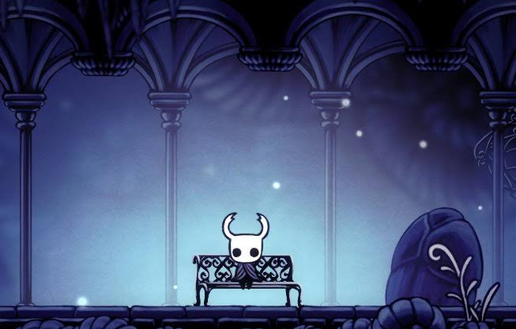
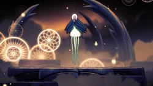
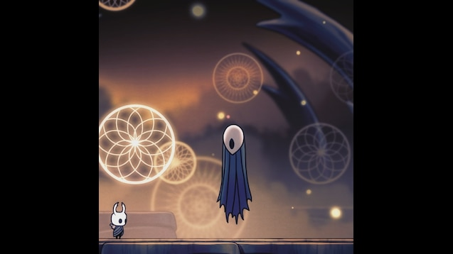
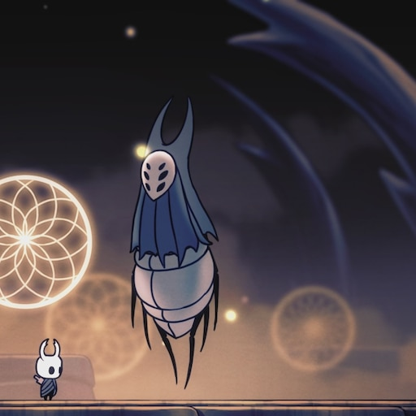
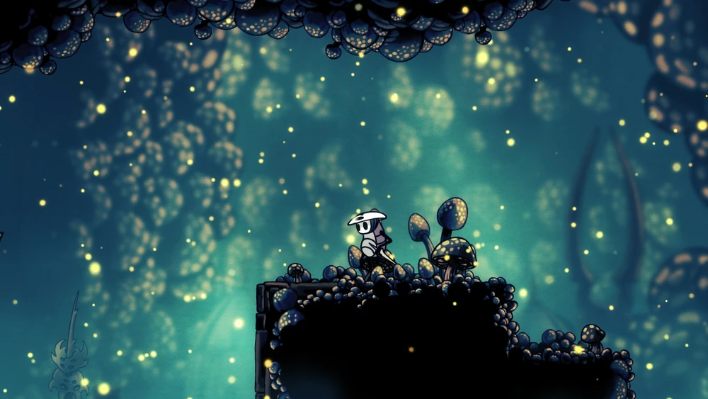

Fabuła
Początek i narodziny królestwa Hallownest
Przed powstaniem królestwa obszary pod ziemią zamieszkiwały dzikie plemiona owadów żyjące w stanie pierwotnej natury. Wszystko zmieniło się wraz z przybyciem potężnej istoty zwanej Bladym Królem (Pale King). Oferując owadom świadomość, rozum oraz ochronę, Król wybudował wspaniałą cywilizację Hallownest. Mieszkańcy czcili go jako boga i twórce świata, a królestwo rozwijało się technologicznie i architektonicznie, tworząc takie cuda jak Miasto Łez (City of Tears).
Powrót Światłości i Wybuch Plagi:
Rozwój królestwa odbył się jednak kosztem dawnej bogini Światłości (The Radiance), z której snów i światła czerpały dawne plemiona. Zapomniana przez owady Światłość postanowiła odzyskać władzę. Zaczęła nawiedzać sny mieszkańców Hallownest pod postacią złocistego blasku, zmuszając ich do szaleństwa i odbierając wolną wolę. Tak narodziła się Plaga (The Infection) ciało zainfekowanych owadów deformowało się, a ich umysły zamieniały bezmyślne, agresywne instynkty.
Projekt Naczyń i Stworzenie Hollow Knighta
Gdy tradycyjne metody zawiodły, Blady Król posunął się do ostateczności. Zszedł do najgłębszych otchłani królestwa (Void / Pustka) i wykorzystał jej czarną, pozbawioną woli substancję do stworzenia tysięcy „Naczyń” (Vessels) swoich dzieci połączonych z Pustką. Czyste Naczynie miało nie posiadać umysłu, woli ani emocji, dzięki czemu mogłoby wchłonąć Światłość i uwięzić ją w sobie na zawsze. Z tysięcy prób Król wybrał jedno Naczynie, które uznał za idealne nazwał je Hollow Knight.
Upadek Pieczęci
Aby upewnić się, że Światłość nigdy nie wydostanie się z Hollow Knighta, został on zamknięty w Świątyni Czarnego Jaja,
a dostęp do niej zablokowano magią Trzech Śpiących (The Dreamers):
-Nauczycielki Monomon
-Obserwatora Luriena
-Bestii Herrah (Władczyni Deepnest)
okazał się jednak skażony błędem. Hollow Knight nie był całkowicie pozbawiony emocji wykształcił więź z Bladym Królem. Ta drobna skaza wystarczyła,
by Światłość powoli przełamała jego opór. Plaga zaczęła wyciekać ze Świątyni, Król zniknął wraz ze swoim pałacem, a królestwo Hallownest ostatecznie popadło w ruinę.
Rola Rycerza i Prawdziwe Przeznaczenie
Gra rozpoczyna się wiele lat po upadku królestwa. Główny bohater bezimienny Rycerz jest jednym z odrzuconych Naczyń, które przetrwały w Otwchłani i powróciły do Hallownest.
Jego zadaniem jest przemierzenie ruin, odnalezienie Śpiących, zniszczenie ich pieczęci i zmierzenie się z tragicznym losem swojego rodzeństwa oraz samej Światłości.
Zakończenia Gry
Są 3 podstawowe zakończenia gry
1. Hollow Knight (Podstawowe zakończenie)
Rycerz pokonuje skażonego Hollow Knighta i wchłania Plagę do własnego ciała. Zostaje uwięziony w Świątyni Czarnego Jaja jako nowe Naczynie, a pieczęcie odnawiają się.
Plaga zostaje powstrzymana, ale jest to tylko tymczasowe rozwiązanie cykl zatacza koło, a historia królestwa zatrzymuje się w tragiczny sposób.
2. Dream No More (Prawdziwe zakończenie)
Rycerz używa Przebudzonego Gwoździa Snów na obezwładnionym Hollow Knight i wnika bezpośrednio do jego umysłu. Zamiast wchłonąć Plagę,
stawia czoła jej źródłu bogini Światłości (The Radiance). Przy wsparciu Pustki i duchów pozostałych Naczyń, Rycerz niszczy Światłość raz na zawsze.
Plaga znika z Hallownest, a dusze Naczyń odnajdują upragniony spokój.
3. Sealed Siblings (Zapieczętowane Rodzeństwo)
Podczas finałowej walki z pomocą przybywa Hornet, która obezwładnia Hollow Knighta. Jeśli Rycerz nie użyje Gwoździa Snów,
lecz zwykłego ataku, walka kończy się zapieczętowaniem obojga bohaterów w Świątyni.
Hornet
staje się jedną z nowo powstałych pieczęci na drzwiach królestwo traci ostatnią obrończynię, a uwięzienie Plagi znowu jest niepewne.
ważne postacie
Knight (rycerz)

Główny bohater gry, bezimienne Naczynie (Vessel) stworzone z Połączenia Duszy oraz Pustki. Nie posiada głosu, woli ani własnego umysłu. Przemierza upadłe królestwo Hallownest, aby poznać swoją przeszłość i dopełnić przeznaczenia, stawiając czoła trawiącej krainę Infekcji.
Hornet

Zręczna i groźna protektorka ruin Hallownest, walcząca za pomocą igły i nitki. Jest córką Bladego Króla oraz Herrah Bestii. Początkowo testuje siłę Rycerza w walce, ale z czasem staje się jego kluczową sojuszniczką w walce o losy upadłego królestwa.
Hollow knihgt

Pierwotne Naczynie wybrane przez Bladego Króla do zapieczętowania Radiance i powstrzymania Infekcji. Zostało wychowane i wyszkolone z myślą o tym jednym zadaniu, jednak wykształcenie w nim jakichkolwiek uczuć sprawiło, że pieczęć zawiodła.
Pale king (blady król)

Dawny władca Hallownest, Wyrm, który przybrał mniejszą postać i obdarzył robaki rozumem. W obliczu zagrożenia ze strony Radiance posunął się do drastycznych kroków, tworząc tysiące Naczyń z Pustki, aby ocalić swoje królestwo za wszelką cenę.
White lady (biała dama)

Królowa Hallownest i partnerka Bladego Króla. Korzeń o wielkiej mocy, która współtworzyła Naczynia. Po upadku królestwa schroniła się w swoich ogrodach, odczuwając ogromne poczucie winy za tragiczny los stworzonych dzieci.
Monomon the Teacher (Nauczycielka Monomon)

Jeden z trzech śniących (Dreamers). Uczona i archiwistka Hallownest, która poświęciła się, by stać się żywą pieczęcią więżącą Hollow Knighta. Przed zapadnięciem w sen powierzyła swoją maske potrzebną do zdjęcia ochcrony Quirrelowi.
lurien the watcher

śniący strzegący pieczęci z iglicy spoglądającej na Miasto Łez. Pozostał skrajnie lojalny wobec Bladego Króla i bez wahania oddał się w wieczny sen, aby chronić królestwo przed zagładą.
herrah the beast

Władczyni wrogiego królestwa pająków Deepnest i ostatni z śniących. Zgodziła się uśpić swój umysł i stać się pieczęcią tylko pod warunkiem, że Blady Król da jej dziecko w ten sposób na świat przyszła Hornet.
Quirrel

Ciekawy świata wędrowiec i poszukiwacz przygód, który powraca do Hallownest bez pamięci o swojej przeszłości. W rzeczywistości był asystentem Monomon, a jego powrót wiąże się z koniecznością dopełnienia dawnej obietnicy.
Radiance (Światłość)